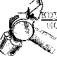
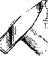

РУБКА МЕТАЛЛА. ИНСТРУМЕНТЫ
ИНСТРУМЕНТЫ ДЛЯ РУБКИ
| ЗУБИЛО | КРЕЙЦМЕЙСЕЛЬ | КАНАВОЧНИК |
|---|---|---|
|
Состоит из трёх частей: рабочей, средней и ударной. Рабочую часть закаливают и отпускают. После термической обработки режущая кромка должна иметь твердость HRC 53…59, а боёк – HRC 35…45. Длина 100 – 200 мм. Ширина режущей кромки 5…25 мм. Углы заострения зубила: Твердые материалы…70° Материалы средней твердости…60° Мягкие материалы…45° Алюминиевые сплавы…35° |
Отличается от зубила более узкой режущей кромкой и предназначен для вырубания узких канавок, шпоночных пазов и т.п. Ширина режущих кромок 2, 5, 8, 10, 12мм. . Углы заострения и твердость рабочих частей такие же, что и у зубила. . Материал крейцмейселя и зубила: У7А, У8А, 7ХФ, 8ХФ. |
Применяется для вырубания профильных канавок – полу-круглых, двухгранных и дру-гих. Изготовляют из стали У8А длиной 80, 100, 120, 150, 200, 300, 350мм, с радиусом за-кругления 1; 1,5; 2; 2,5; 3 мм |
|
 Слесарный молоток с круглым бойком изготовляют шести номеров: № 1 – 200 г № 2 – 400 г № 3 – 500 г № 4 – 600 г № 5 – 800 г № 6 – 1000 г |
 Слесарные молотки с квадратным бойком изготовляют восьми номеров: № 1 – 50 г № 2 – 100 г № 3 – 200 г № 4 – 400 г № 5 – 500 г № 6 – 600 г № 7 – 700 г № 8 – 1000 г |
Массу слесарного молотка выбирают в зависимости от размера зубила (из расчёта 40г на 1мм ширины лезвия зубила). При работе крейцмейселем массу молотка принимают из расчета 80г на 1мм ширины лезвия.